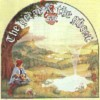
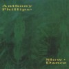

strange music page
progressive rock * * * genesis
|
#ジェネシス。
Anthony Phillips関連は好きです。
あまりPeter Gabriel自体は好きじゃないかも。
どこに入れようか迷ったBRAND Xはここへ。
|
- GENESIS
- Anthony Phillips
- Steve Hackett
- BRAND X
|
- Looking for Someone
- White Mountain
- Visions of Angels
- Stagnation
- Dusk
- The Knife
- Peter Gabriel (vocals,flute,accordion)
- Anthony Phillips (12string guitar,dulcimer,vocals)
- Tony Banks (organ,piano,mellotron)
- Michael Rutherford (12string guitar,bass,cello)
- John Mayhew (drums,percussions)
VIRGIN JAPAN: VJCP-23113 (original release 1970 - CHARISMA RECORDS)
- The Musical Box
- For Absent Friends
- The Return of The Giant Hogweed
- Seven Stones
- Harold The Barrel
- Harlequin
- The Fountain of Salmacis
- Tony Banks (organ,mellotron,piano,12string guitar,voice)
- Michael Rutherford (bass,bass pedal,12string guitar,voices)
- Peter Gabriel (vocals,flute,tambourine)
- Steve Hackett (electric guitars,12string guitar)
- Phil Collins (drums,percussions,voices)
VIRGIN JAPAN: VJCP-23114 (original release 1971 - CHARISMA RECORDS)
- Watcher of The Skies
- Time Table
- Get'em Out by Friday
- Can-Utility and The Coastliners
- Horizons
- Supper's Ready
- Lover's Leap
- The Guaranteed Eternal Sanctuary Man
- Ikhnaton and Itscon and Their Band of Merry Man
- How Dare I Be So Beautiful?
- Willow Farm
- Apocalypse in 9/8
- As Sure As Eggs Is Eggs (Aching Men's Feet)
- Tony Banks (organ,mellotron,piano,12string guitar,voice)
- Michael Rutherford (bass,bass pedal,12string guitar,voices)
- Peter Gabriel (vocals,flute,tambourine)
- Steve Hackett (electric guitars,12string guitar)
- Phil Collins (drums,percussions,voices)
VIRGIN JAPAN: VJCP-23115 (original release 1972 - CHARISMA RECORDS)
#Firth of Fifthの流麗なギターは今聴いてもいいなーと思います。他の曲はちょっと緩めかな～
- Dancing With The Moonlit Knight
- I Know What I Like
- Firth of Fifth
- More Fool Me
- The Battle of Epping Forest
- After The Ordeal
- The Cinema Show
- Aisle of Plenty
- Peter Gabriel (vocals,flute,percussions,oboe)
- Tony Banks (keyboards,12string guitar)
- Steve Hackett (electric guitar)
- Michael Rutherford (12string guitar,bass,electric sitar)
- Phil Collins (drums,percussions,voice)
VIRGIN JAPAN: VJCP-23117 (original release 1973 - CHARISMA RECORDS)
- The Lamb Lies Down On Broadway
- Fly On A Windshield
- Broadway Melody Of 1974
- Cuckoo Cocoon
- In The Cage
- The Grand Parade Of Lifeless Packaging
- Back In N.Y.C.
- Hairless Heart
- Counting Out Time
- Carpet Crawl
- The Chamber Of 32 Doors
- Lilywhite Lilith
- The Waiting Room
- Anyway
- Here Comes The Supernatural Anaestheist
- The Lamia
- Silent Sorrow In Empty Boats
- The Colony Of Slippermen
- The Arrival
- A Visit To The Doctor
- Ravine
- Ravine
- The Light Dies Down On Broadway
- Riding The Scree
- In The Rapids
- It
- Peter Gabriel (vocals,flute)
- Michael Rutherford (bass,12string guitar)
- Steve Hackett (guitars)
- Phil Collins (drums,percussioins,vibes,vocals)
- Tony Banks (keyboards)
VIRGIN JAPAN: VJCP-36028 (original release 1974 - CHARISMA RECORDS)
#私にとってジェネシスってこのイメージだったりします。12弦ギターのちょっとファンタジックな世界。
Anthony Phillips本人の歌う Master of Time がとても好きです、歌下手だけど、なんだか湿った雰囲気がキモチイイです。

- Wind - Tale
- Which Way The Wind Blows
Henry; Portraits From Tudor Times
- (i) Fanfare
- (ii) Lutes' Chorus
- (iii) Misty Battlements
- (iv) Henry Goes To War
- (v) Death Of A Knight
- (vi) Triumphant Return
- God If I Saw Her Now
- Chinese Mushroom Cloud
- The Geese And The Ghost Part 1
- The Geese And The Ghost Part 2
- Collections
- Sleepfall: The Geese Fly West
- Master Of Time (demo)
- Anthony Phillips (guitars,bass,bouzouki,mellotron,piano,organ)
- Michael Rutherford (guitars,bass,organ,drums,glockenspeil)
- Rob Phillips (oboe on 6.8.)
- Lazo Momulovich (oboe,cor anglais on 3.6.)
- John Hackett (flute on 4.7.8.)
- Wil Sleath (flute,baroque flute,recorders,piccolo on 3.)
- Jack Lancaster (flute,lyricon on 8.)
- Charlie Martin (cello on 5.6.)
- Kirk Trevor (cello on 5.6.)
- Nick Hayley + friends (violins on 6.)
- Martin Westlake (timpani on 3.5.6.)
- Tom Newman (hecklephone,bulk eraser on 9.)
- David Thomas (classical guitar on 9.)
VIRGIN JAPAN: VJCP-2321 (original release 1977)
#とても好きです。イングランドの森の中ってこんな感じなのかと思わせるような深い音。

- Slow Dance (Part 1)
- Slow Dance (Part 2)
VIRGIN JAPAN: VJCP-65 (1990.11.21)
- Ace of Wands
- Hands of the Priestess Part I
- A Tower Struck Down
- Hands of the Priestess Part II
- The Hermit
- Star of Sirius
- The Lovers
- Shadow of the Hierophant
- Steve Hackett (guitars,mellotron,harmonium,bell,autoharp,vocals,effects)
- John Hackett (flute,arp synthesizer,bells)
- Mike Rutherford (bass,bass pedals,fuzz 12string)
- Phil Collins (drums,percussions,vibes,vocals)
- John Acock (mellotron,harmonium,piano)
- Sally Oldfield (vocals)
- Nigel Warren-Green (cello)
- Percy Jones (bass on 3.)
- Johnny Gustafson (bass on 6.)
- Nuclear burn
- Euthanasia waltz
- Born ungly
- Smacks of euphonic hysteria
- Unorthodox behaviour
- Running of three
- Touch wood
John Goodsall (guitars,sitar)
Percy Jones (bass,marinba)
Robin Lumley (keyboards,piano)
Phil Collins (drums)
Morris Pert (percussions)
- Sun in The Night
- Why Should I Lend You mine (When You've broken Yours Off Already)...
- ...Maybe I'll Lend You Mine After All
- Hate Zone
- Collapsar
- Disco Suicide
- Orbits
- Malaga Virgen
- Macrocosm
- Phil Collins (drums)
- Morris Pert (percussions)
- Robin Lumley (keyboards)
- Percy Jones (bass)
- John Goodsall (guitars)
VIRGIN JAPAN: VJD-28202 (orignal release 1977 - CHARISMA RECORDS)
- The Poke
- Masques
- Black Moon
- Deadly Nightshade
- Earth Dance
- Access to Data
- The Ghost of Mayfield Lodge
- Percy Jones (bass)
- John Goodsall (guitars)
- Morris Pert (percussions)
- Peter Robinson (keyboards)
- Chuck Burgi (drums)
VIRGIN JAPAN: VJD-28204 (original release 1978 - CHARISMA RECORDS)
- Don't Make Waves
- Dance of The Illegal Aliens
- Soho
- Not Good Enough-See Me!
- Algon
- Rhesus Perplexus
- Wal to Wal
- ...And so to F
- April
- Phil Collins (drums)
- John Goodsall (guitars)
- Percy Jones (bass)
- Robin Lumley (keyboards)
- Morris Pert (percussions)
- John Gibson (bass)
- Peter Robinson (keyboards)
- Mike Clark (drums)
VIRGIN JAPAN; VJD-28205 (original release 1979 - CHARISMA RECORDS)
#なんだかLINUXの設定みたいで嫌なタイトルですけど、1992年の復活作。
- Xanax Taxi
- Liquid Time
- Kluzinski Period
- Healing Dream
- Mental Floss
- Strangeness
- A Duck Exploding
- Message to You
- Church of Hype
- Kluzinski Reprise
- Percy Jones (fretless bass)
- John Goodsall (guitars,midi-guitar)
- Frank Katz (drums)
JIMCORECORDS: JICK-89153 (1882.12.1)